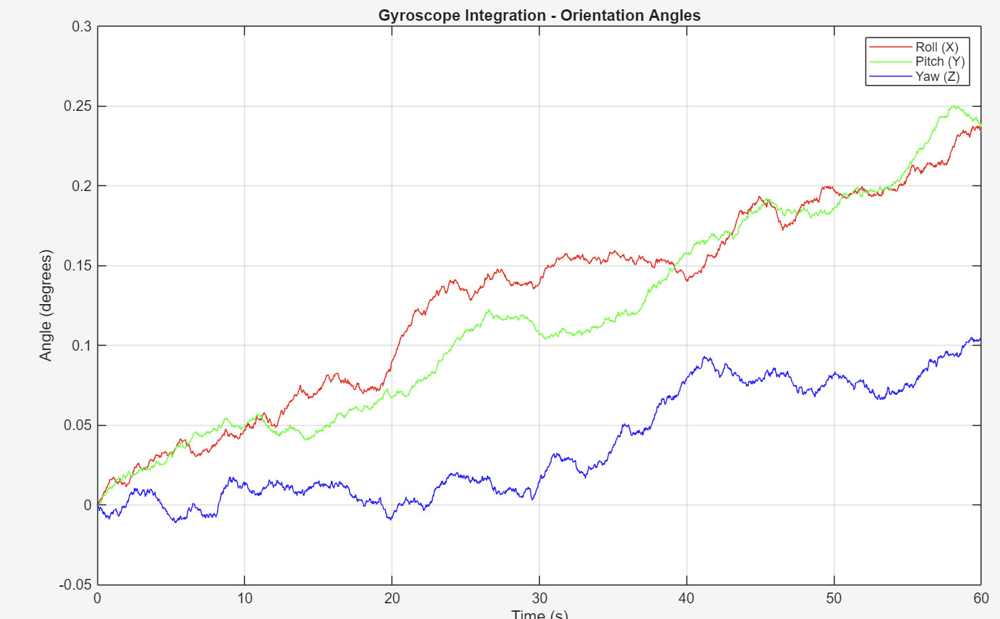
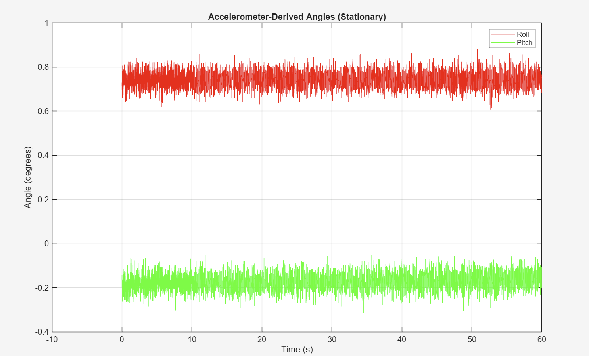
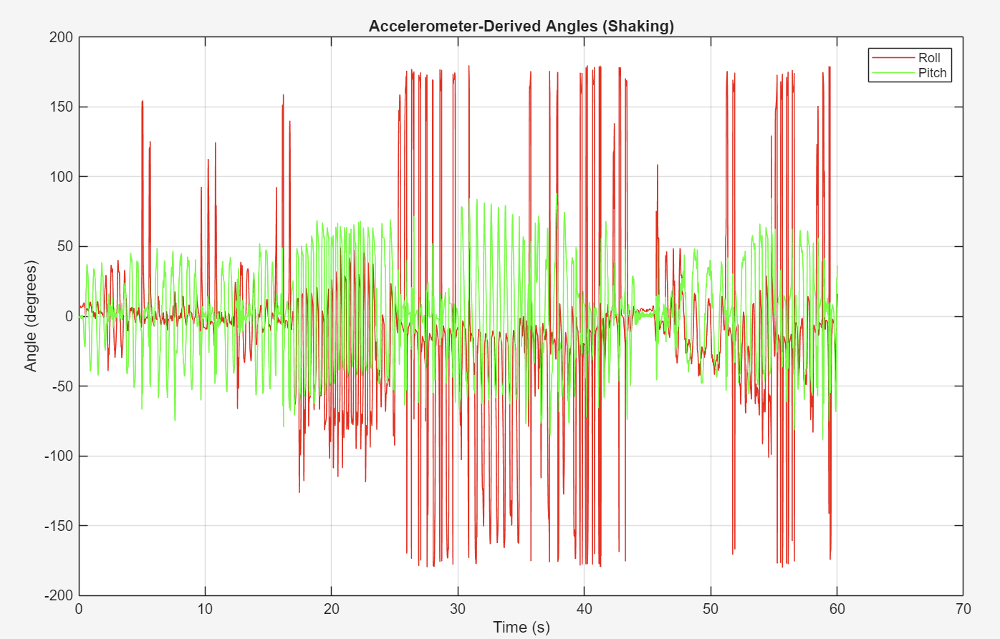
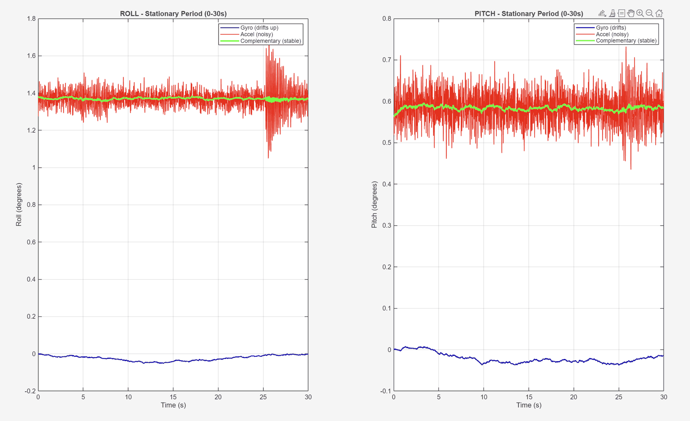
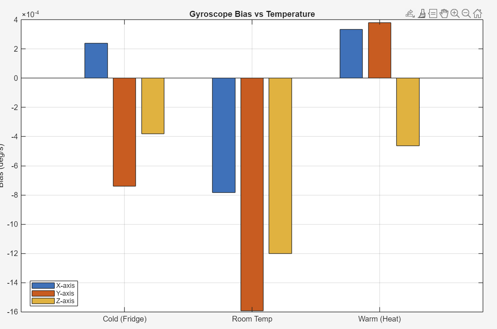
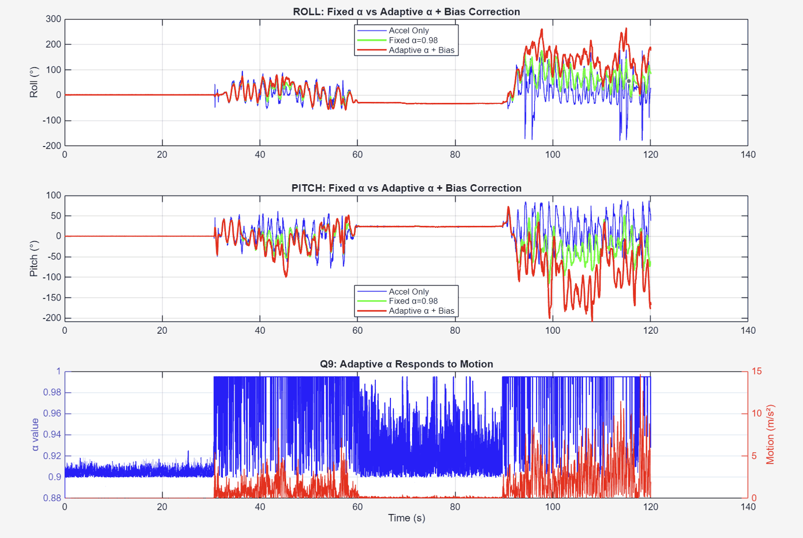
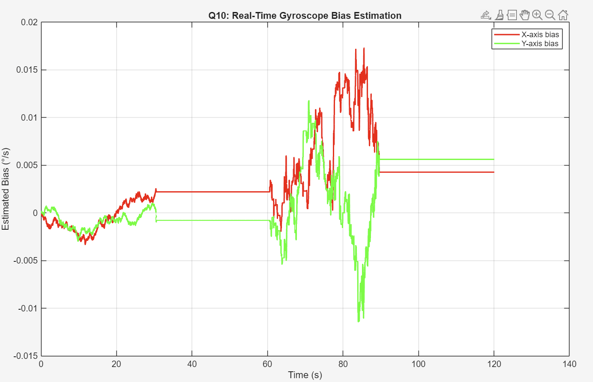

01
The two raw signals



02
Blending them


03
Bias and temperature
- Measured gyro bias in a fridge, at room temperature and warm. Bias shifts with temperature, so it has to be tracked.
- Estimated the bias online whenever the sensor is still, and let the filter weight change with motion.


